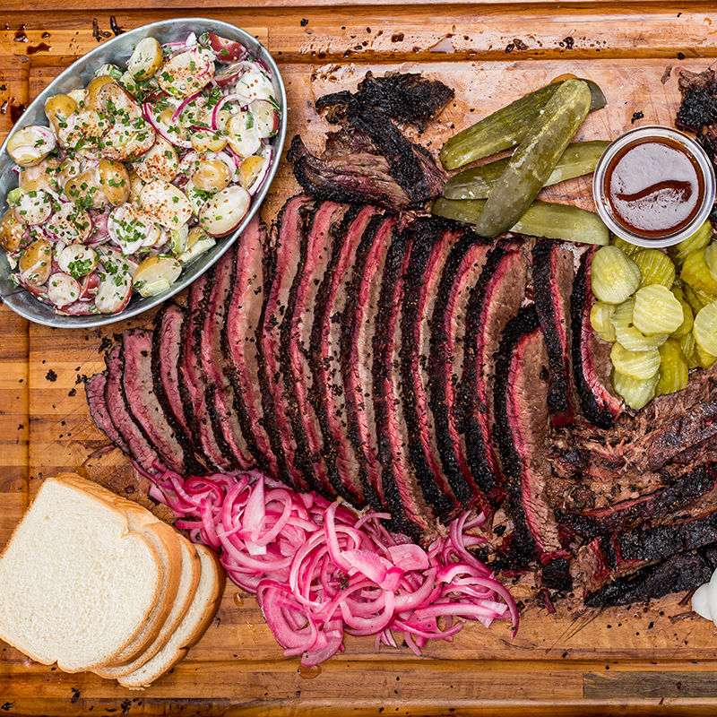

Smoked Brisket

The Foolproof Brisket Recipe That Will Leave Your Guests Wanting More
There is nothing like the excitement of a Texas BBQ, what's not to love about it? Well the $25.99 price
tag on that juicy brisket that just spent a whole day in the smoker. But fear not Mark Pepin has you
covered to make that coveted perfect smoked brisket out of the comfort of your own home.
So grab your favorite pellets and fire up that smoker. It's time for brisket baby!
Ingredients
- 12-15 lb. Brisket
- Brisket Seasoning
- BBQ Seasoning
Steps
- Trim fat end and gray ends of meat to round out brisket
- Flip over to fat side and trim fat down to 1/2 inch of fat on flat end
- Hit fat side with BBQ seasoning
- Hit with Brisket seasoning
- Repeat on other side
- Rest for 3-4 hours
- Meanwhile set smoker to 195
- Put brisket on grill after rest
- Leave for 8 hours
- Remove brisket and wrap in butcher paper
- Probe meat should be about 150
- Put back on pellet grill
- Heat until 190
- Set into dry cooler with lid and let it sit for 2 hours